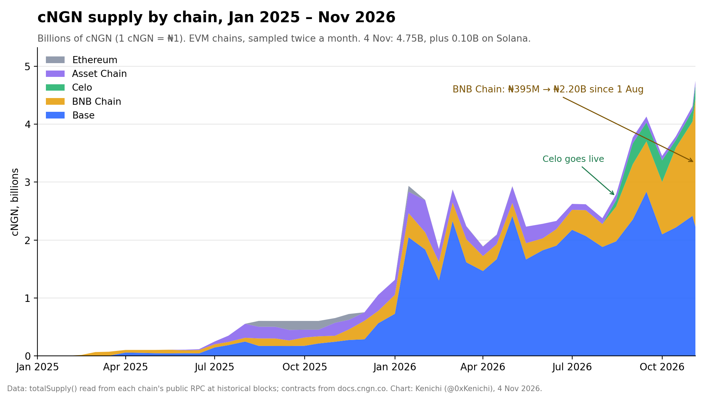

How much cNGN is on-chain? Contract reads, checked against the auditor's reports
Issuer's contract list 31 Aug auditor's report (PDF) 31 Oct auditor's report (PDF) cNGN transparency page Data and scripts
cNGN is a naira stablecoin (1 cNGN = ₦1) issued by Wrapped CBDC Limited, a member of the Africa Stablecoin Consortium. The issuer's list names twelve mainnet contracts on different chains. I wanted two answers: how much cNGN exists on-chain, and does that match what the issuer reports?
A dashboard can only show the chains its data provider indexes, and cNGN sits on several small or new ones (Asset Chain, Monad, Arc, ADI, Bantu). So I went to the source. I read each token contract's total supply directly, then checked my reads against the independent auditor's monthly report.
Supply doubled in three months: ₦2,377M → ₦4,751M on the five chains read at both dates (₦4,853M with Solana), 1 Aug to 4 Nov 2026. BNB Chain did most of it, growing from ₦395M to ₦2,199M.
My reads equal the auditor's figures: at the report's cut-off, 9:45 pm WAT on 31 Aug, all five chains I read match its per-chain figures to the kobo. The 61.07M cNGN remainder is exactly Solana + Bantu + Polygon, which I didn't read at that time. The latest report, 31 Oct, matches the same way. My first comparison, about 15 hours after the 31 Aug cut-off, was 13% high because Base and Celo minted a net 501M cNGN in between.
Method
- Addresses from the issuer only. I used the mainnet list at docs.cngn.co. Some third-party sites list different cNGN addresses. I ignored them.
- One call per contract per date. On each EVM chain I called
totalSupply()at a fixed block through the chain's public RPC, then divided by 106. All five contracts report 6 decimals. - Fixed times. For the series, I took a block within 30 minutes of 12:00 UTC on the 1st and 15th of each month, from 1 Jan 2025 to 1 Nov 2026, plus the latest block on 4 Nov 2026. I found each block by searching on block timestamps. For the check, I took the last block at or before the auditor's cut-off: 20:45:00 UTC (9:45 pm WAT) on 31 Aug 2026.
- Public endpoints. mainnet.base.org (Base), Blast API (BNB Chain), forno.celo.org (Celo), dRPC and 1RPC (Ethereum), mainnet-rpc.assetchain.org (Asset Chain). For Solana,
getTokenSupplyon Solana's public RPC. The 25 Nov read used publicnode.com for Base, BNB Chain, Ethereum and Polygon. - Odd values re-read. Seven reads came back as zero. Two were caught in the first run: BNB Chain on 15 Jan 2026 and Asset Chain on 1 Aug 2025. Five more, Asset Chain from 15 Apr to 15 Jun 2025, stayed in the saved file until I re-read them on 25 Nov: they were 10,224 cNGN in mid-April, rising to 14.3M by 15 Jun. The data file has the corrected values.
Which chains I read, and when:
| Chain | Contract | Read |
|---|---|---|
| Base | 0x46C8…EF5F | Every date |
| BNB Chain | 0xa8AE…F058 | Every date |
| Celo | 0xF682…1a4f | Every date |
| Ethereum | 0x17CD…8dab | Every date |
| Asset Chain | 0x7923…FC4F | Every date |
| Solana | 3jiq…gkv8 | 4 and 25 Nov |
| Polygon, Monad, ADI | see list | 4 and 25 Nov (under ₦25K together) |
| Arc | see list | Not counted: its RPC didn't respond |
| Bantu, Stellar | see list | Not read |
What the contracts show

| Chain | 1 Aug | 4 Nov |
|---|---|---|
| Base | ₦1,880M | ₦2,233M |
| BNB Chain | ₦395M | ₦2,199M |
| Celo | ₦0 | ₦241M |
| Asset Chain | ₦102M | ₦75M |
| Ethereum | ₦0.1M | ₦3.5M |
| Five chains | ₦2,377M | ₦4,751M |
| Solana | not read | ₦102M |
| With Solana | – | ₦4,853M |
- BNB Chain grew 5.6 times. By 4 Nov it was close to Base, the largest chain at every read since mid-December 2025.
- Celo's first supply shows up in the 15 Aug read. Asset Chain peaked at ₦554M on 1 Feb 2026 and was ₦75M on 4 Nov.
- Supply moves a lot between reads. Base held ₦2,835M on 15 Sep and ₦2,099M on 1 Oct. Treat any single point as a snapshot.
Checking against the auditor's reports
A contract read shows what exists on-chain. To know whether my reads are right, I need a second source that doesn't depend on my method. For cNGN that is the monthly report by Bala Isah Garba and Company (Chartered Accountants), linked from the issuer's transparency page.
The 31 Aug 2026 report is an examination under ISAE 3000 (Revised). Its cut-off is "as of 31st August 2026 at 9:45 pm West African Time", which is 20:45 UTC. It states 3,329,961,223.91 cNGN in circulation against ₦3,550,845,048.39 of reserve assets, and its Table 3 splits the cNGN by network. I re-read the five EVM chains at that moment with python3 supply_at.py 2026-08-31T20:45:00.
| Chain | Auditor | My read | Diff. |
|---|---|---|---|
| Base | 2,078,532,784.00 | 2,078,532,784.00 | 0.00 |
| BNB Chain | 954,400,390.67 | 954,400,390.67 | 0.00 |
| Celo | 133,788,554.00 | 133,788,554.00 | 0.00 |
| Ethereum | 137,326.40 | 137,326.40 | 0.00 |
| Asset Chain | 102,032,227.07 | 102,032,227.07 | 0.00 |
| Solana | 60,250,023.00 | not read | – |
| Bantu | 807,343.37 | not read | – |
| Polygon | 12,575.40 | not read | – |
| Total | 3,329,961,223.91 | 3,268,891,282.14 | 61,069,941.77 |
cNGN at 20:45 UTC on 31 Aug 2026. "Auditor" is Table 3 of the report. "My read" is totalSupply() at the last block at or before that time. Swipe the table sideways to see every column.
All five chains I read match to the kobo. The contracts store six decimals, and my unrounded reads differ from the report only after the second decimal: Base reads 2,078,532,783.999372, for example. The 61,069,941.77 cNGN gap is exactly the sum of the three networks I didn't read at that time: Solana (60,250,023.00), Bantu (807,343.37) and Polygon (12,575.40). A read at 23:59:59 UTC gives the same five figures, so supply on these chains was unchanged at the end of the day.
The latest report, 31 Oct 2026, matches too. Same auditor, same 9:45 pm WAT cut-off, total 4,413,216,931.49 cNGN. At 20:45 UTC on 31 Oct (python3 supply_at.py 2026-10-31T20:45:00) my reads are Base 2,417,804,432.10, BNB Chain 1,626,985,458.38, Celo 190,665,475.63, Ethereum 237,806.40 and Asset Chain 74,834,217.03, each equal to the report's row. The 102,689,541.95 cNGN gap is exactly Solana (101,749,983.88), Bantu (922,852.12) and Polygon (16,705.95).
Why my first comparison was 13% high
My first comparison used my nearest sample, about 12:00 UTC on 1 Sep, some 15 hours after the cut-off. It came out 13.2% above the report's total. A gap that size needs an explanation before anyone relies on the number, so I re-read at the cut-off.
| Chain | Cut-off | 1 Sep, 12:00 | Change |
|---|---|---|---|
| Base | 2,078.53 | 2,353.53 | +275.00 |
| BNB Chain | 954.40 | 954.40 | 0 |
| Celo | 133.79 | 359.79 | +226.00 |
| Ethereum | 0.14 | 0.14 | 0 |
| Asset Chain | 102.03 | 102.03 | 0 |
| Total | 3,268.89 | 3,769.89 | +501.00 |
Millions of cNGN. Cut-off is 20:45 UTC on 31 Aug.
Between the cut-off and midday on 1 Sep, net supply rose by exactly 275M cNGN on Base and 226M on Celo. The other three chains didn't move. A reserve check is only as good as its timestamp.
Update, 25 November 2026
At 19:50 UTC on 25 Nov I re-read every listed EVM contract and Solana with supply_now.py, and loaded the issuer's live table at cngn.co/transparency in the same minute. Every chain I could read matched the issuer's row to the kobo.
| Chain | 4 Nov | 25 Nov | Issuer |
|---|---|---|---|
| Base | 2,232.88 | 2,285.29 | 2,285.29 |
| BNB Chain | 2,198.86 | 1,511.12 | 1,511.12 |
| Celo | 240.67 | 251.14 | 251.14 |
| Ethereum | 3.52 | 23.54 | 23.54 |
| Asset Chain | 74.83 | 99.83 | 99.83 |
| Five chains | 4,750.76 | 4,170.92 | 4,170.92 |
| Solana | ≈102 | 111.25 | 111.25 |
Millions of cNGN. "25 Nov" is my read; "Issuer" is the table at cngn.co/transparency, loaded the same minute.
The five-chain total fell 12% in three weeks, from 4,750.76M to 4,170.92M. BNB Chain lost 687.74M, more than the whole drop; Base, Celo, Ethereum and Asset Chain all rose. The issuer's table also shows 23,385.95 cNGN on Polygon, 10 on Monad and 1 on ADI, which match my reads, and 10 on Arc, which I couldn't read. It shows 144,420.00 on Bantu and 935,350.22 on Stellar, which I don't read.
Records that disagree
Three public records don't line up. None changes the result above, but each could trip up someone checking cNGN.
- Which chains count. The issuer's docs and its GitHub README list twelve mainnet contracts. The 31 Aug report covers eight networks: it has no Monad, Arc, ADI or Stellar. On 25 Nov the issuer's page showed 935,350.22 cNGN on Stellar and 21 cNGN across Monad, Arc and ADI. I haven't read them at the report dates, so I can't say whether any held cNGN then. The 31 Oct report lists the same eight networks.
- DIA's cNGN page. It says the issuer lists mainnet contracts on nine chains, including Lisk, and it reads a Lisk contract (
0xC7aB…87c0). Neither the issuer's docs nor its GitHub README listed Lisk when I checked on 25 Nov. The issuer's own transparency API does return a Lisk row, with zero supply, which the page doesn't display. - The live "reserves" figure. The transparency page's "Total amount in Reserves" (4,283,268,528.021 on 25 Nov) equals the sum of its twelve supply rows. So it shows supply, which the issuer says is backed 1:1; it isn't a separate count of reserves. The independent reserve figure is the auditor's report: ₦3,550,845,048.39 against 3,329,961,223.91 cNGN on 31 Aug, an excess of ₦220,883,824.48 (6.6%).
Limits
- Coverage. Five EVM chains at every date. Solana, Polygon, Monad and ADI on 4 and 25 Nov only. Arc not counted. Bantu and Stellar not read. At the 31 Aug and 31 Oct cut-offs I checked five of each report's eight networks.
- Snapshots, not flows. Two samples a month. As 1 Sep shows, supply can move by hundreds of millions between them.
- Definitions. The 31 Aug report's note 10 says tokens in circulation "exclude any freeze or test tokens".
totalSupply()counts every token minted and not burned. On 31 Aug and 31 Oct the two were equal on all five chains I read. If frozen or test tokens are ever left unburned, the two could differ, and contract reads would run high. (In the 31 Aug report, Table 3's column is headed "Maximum Supply", though its total is the "in circulation" figure in Table 1. The 31 Oct report renames it "Tokens in Circulation" and says frozen and test tokens are found by reconciling on-chain supply with the company's mint and burn records.) - Public RPCs. Free endpoints sometimes return bad values. I caught and re-read seven zeros. Others could slip through.
How to reproduce it
Four short Python 3 scripts using plain JSON-RPC calls, plus the data and the raw output of each check. supply_series.py and supply_now.py need requests; chart.py needs matplotlib.
supply_series.pyreadstotalSupply()on the five EVM chains on the 1st and 15th of each month and saves the series as JSON:cngn-supply-series.json.supply_now.pyreads the current supply on every listed EVM contract, plus Solana. 25 Nov output.supply_at.pyreads the exact supply at any UTC moment, for examplepython3 supply_at.py 2026-08-31T20:45:00. Output at the cut-off and at 23:59:59 UTC, and at the 31 Oct cut-off.chart.pydraws the chart from the JSON.
You can also repeat the core read without them: one eth_call to totalSupply() (selector 0x18160ddd) on each contract at the block you choose. At the cut-off those blocks were Base 50,709,876, BNB Chain 119,217,654, Celo 76,308,342, Ethereum 25,877,733 and Asset Chain 1,836,295. At the 31 Oct cut-off: Base 53,345,076, BNB Chain 130,923,250, Celo 81,578,742, Ethereum 26,315,218, Asset Chain 2,038,252.
What I'd check next
- Read Solana, Bantu and Polygon at 20:45 UTC on 31 Aug, so all eight rows of the report's Table 3 are checked, not five.
- Repeat the check against the 30 Nov report when it's posted.
- Track mints, burns and holders between samples, so a 501M jump shows up as the transactions behind it.
Kenichi (Olanrewaju Animashaun) · Lagos · Published 25 November 2026. Series to 4 November, spot check on 25 November. I don't work for, and haven't been paid by, cNGN or Wrapped CBDC Limited. Back to my portfolio.